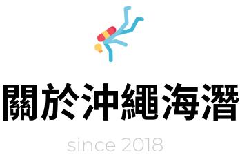

營業初期
由經營者ken哥(黃春源)創立於2018年6/6日，營業初期是以沖繩的水域活動為主，經營者ken哥，是一位具有近30年特殊災害救災應變的專家(以下省略3萬字)，
同時也是一位熱愛設計製作有助於災害應變現場器材的發明家。在受到日本NGO邀請至日本投入國際人道救援工作同時，因任務需求派駐至沖繩後，觀察到華裔遊客在當地從事水上活動時，
發生意外的事件頻繁，因此創立的沖繩海潛，以提供華裔遊客更安全的水域活動。
海潛初期
是以提供潛水服務為先，為了讓移居在日本的台籍教練都能有穩定的工作環境，潛水業在旺季過後，很容易讓同仁在冬季流浪在日本各地工作。經營者ken哥認為，這不是一個負責任的經營者該有的風範，
並於2021年起，海潛與新瀉縣妙高溫莎莊園民宿完成合作聯盟，由沖繩海潛的團隊於雪季期間，來經營雪具出租、滑雪體驗及教學部門，這項計畫雖然受到新冠疫情的影響，但我們仍是積極的佈局版圖。
除了在新冠疫情前要求海潛教練完成國際滑雪教練資格取得，同時海潛是日本潛水業中第一家為執業教練申辦專業技術人才工作簽證的潛店，其難度之高，開啟日本外籍潛水教練的專業工作典範，
海潛的經營理念是，以安全優先，合法驕傲的工作。
未來
海潛都將以這樣的目標來培育旗下從業人員，讓台籍教練在異地也能抬頭挺胸的工作。
前往海潛網站